Agile Retrospectives Workshop
March 2016
By Jayram Joshi / @jayramjAgenda
- What is a retrospective
- Essential Ingredients of Retrospective
- Different flavours of Retrospectives
- Retrospective Anti Patterns
- Questions?
Housing for ALL
Lets build some houses !!
What we want to achieve in next 1 hour
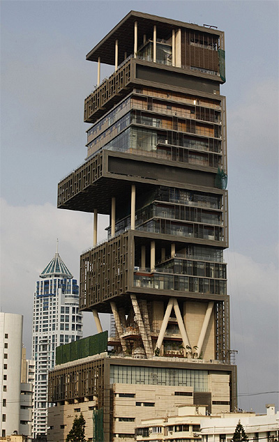What did we observe?
The Definition of insanity is doing same thing over and over , but expecting a different outcome
Are you too busy to improve
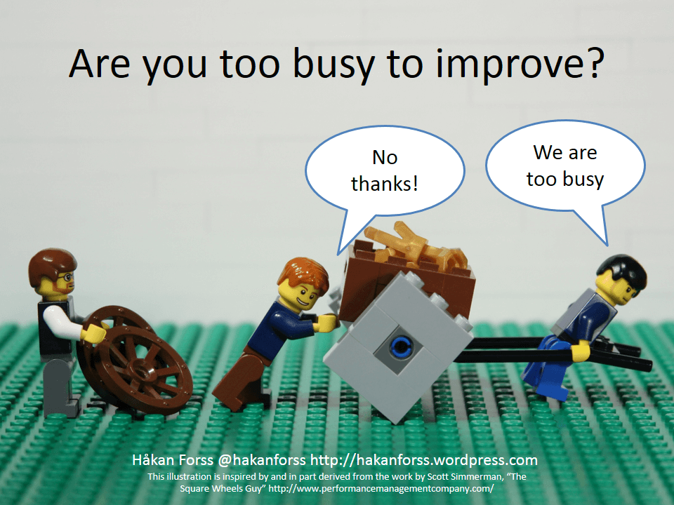At regular intervals, the team reflects on how to become more effective, then tunes and adjusts its behavior accordingly.
- Manifesto for Agile Software Development
Ingredients of a Retrospective
Click "Down" Arrow to Navigate to Next Slide
Enthusiastic & Commited Team
Scheduled in Calendar Well In Advance
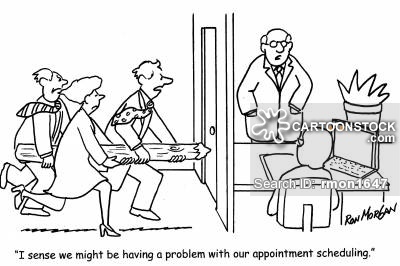Prime Directive
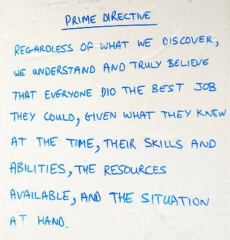Safety Check
Facilitated
Timeboxed
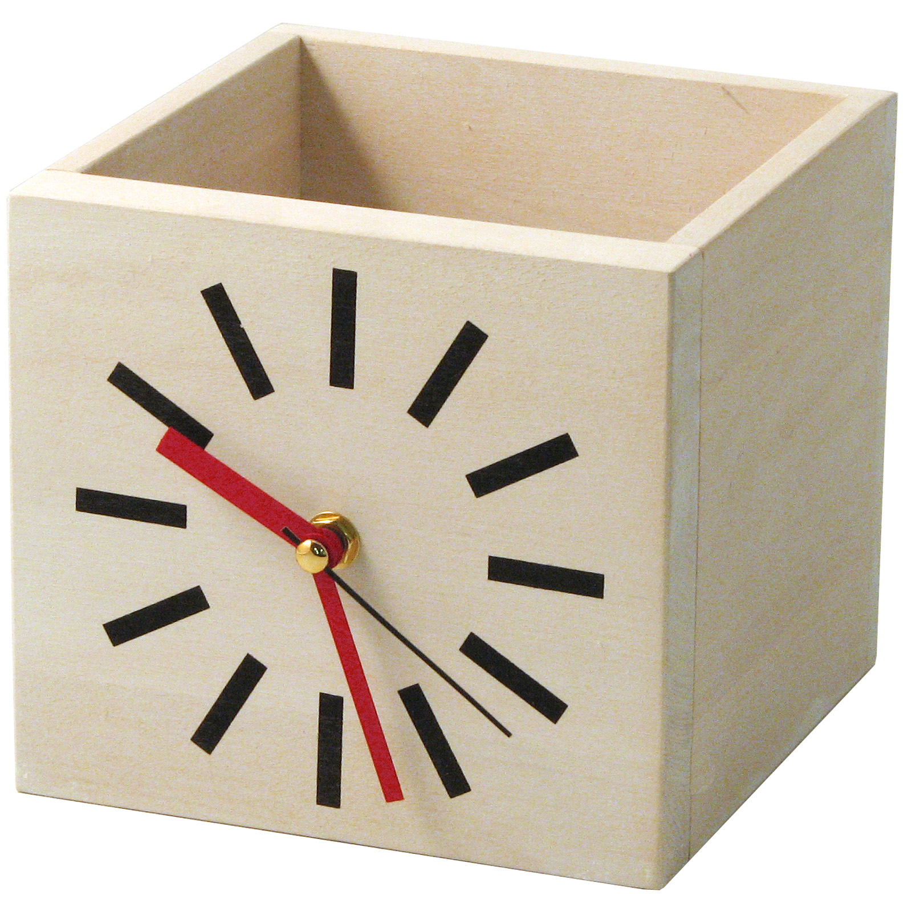Action Items
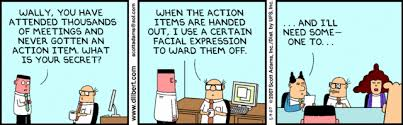Example outcome
WLH ABHFL Retrospective
Different Flavours Of Retrospectives
Click "Down" Arrow to Navigate to Next Slide
Questions retrospective
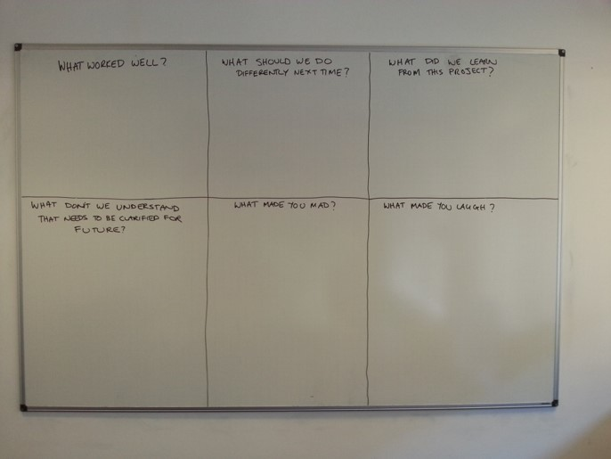Questions retrospective
- What Worked Well?
- What Should We Do Differently Next Time?
- What Did We Learn?
- What Needs to be clarified?
- What Made You Mad?
- What Made You Laugh?
StarFish
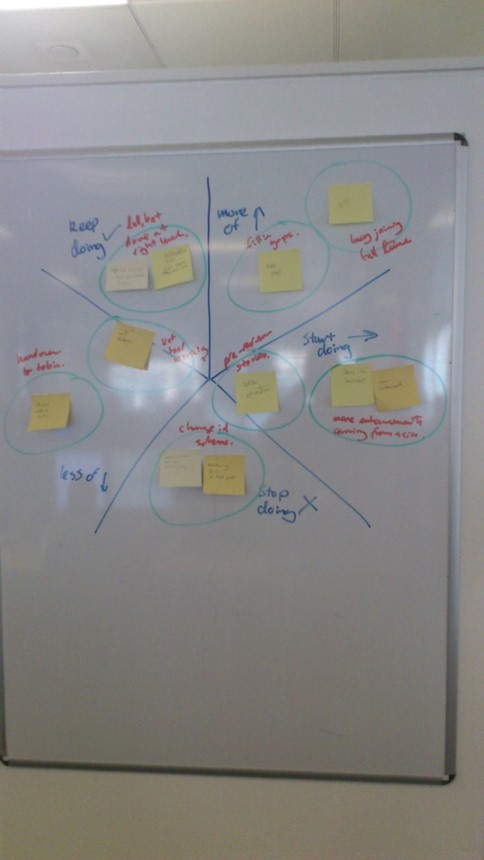Star Fish
- What can we start doing that will speed the team’s progress?
- What can we stop doing that hinders the team’s progress?
- What can we keep doing that is currently helping the team’s progress?
- What is currently aiding the team’s progress and we can do more of?
- What is currently impeding the team’s progress and we can do less of?
Sailboat
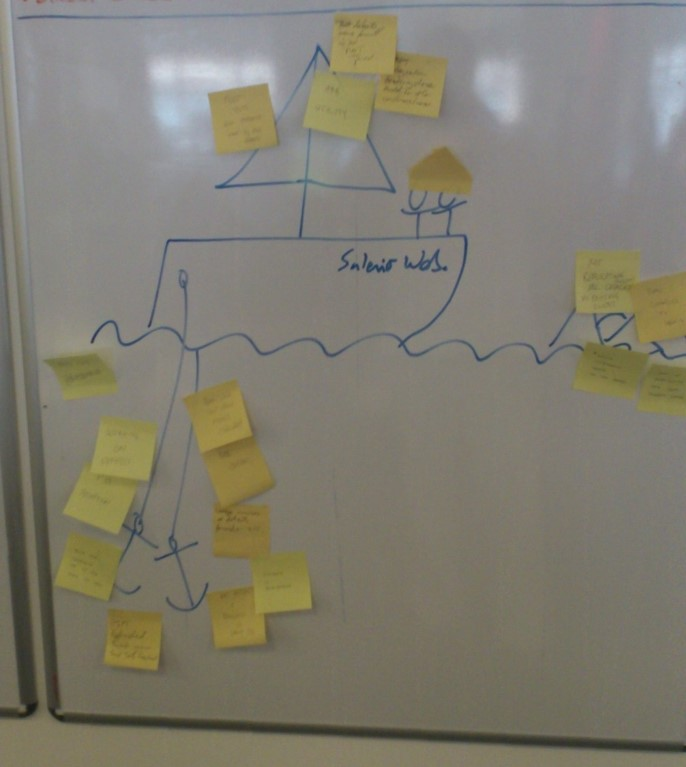SailBoat
- What is it that is holding us back - Anchors?
- How deep is the anchor?
- What is it that can propel us ahead - Engines?
- How powerful is the engine?
4L Technique
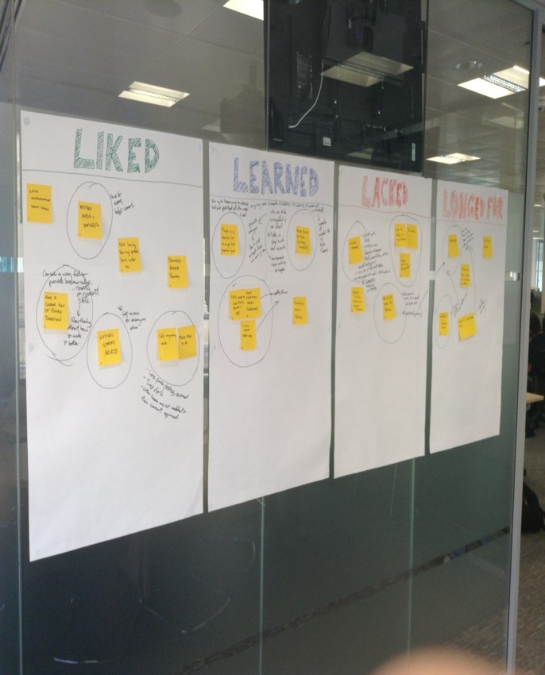4L Technique
- What was Liked?
- What was Learned?
- What Lacked?
- What was Longed For?
Circles
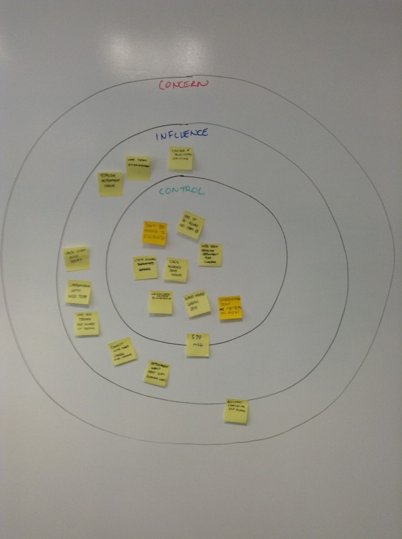Circles
- Is this in my area of control?
- Is this within my sphere of influence
- Is this something within realm of Concern
- Is this something that Is of no Concern?
TimeLine Retrospective
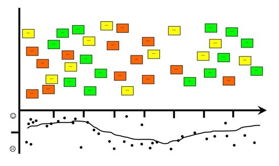Agile Retrospectives AntiPatterns
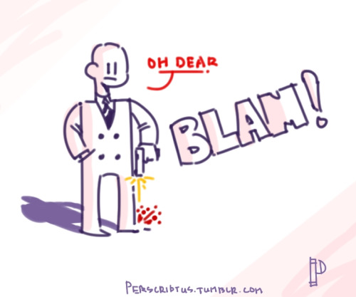
Credit :
Luis Gonçalves - Agile Antipatterns
Click "Down" Arrow to Navigate to Next Slide
WHAT HAPPENS IN RETRO, DOES NOT STAY IN RETRO
CHANGE THE WORLD
NO TIME TO IMPROVE
NO RESPONSABILITY IS TAKEN
WISHFUL THINKING
CHICKENS INFLUENCE THE OUTCOME
HISTORY LESSONS AND IDEAS FEST
NO REVIEW OF PAST ACTION ITEMS
OFTEN ACTION ITEMS ARE AUTOMATICALLY ASSIGNED TO PM,SM,CSL
QUESTIONS